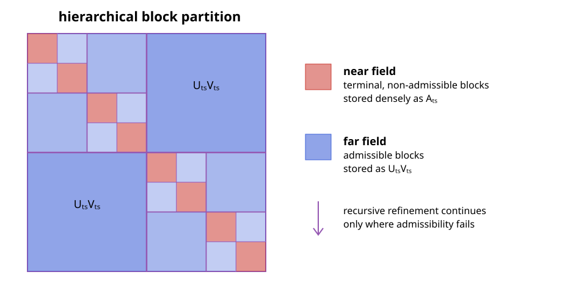

Hierarchical Matrices
A hierarchical matrix, or $\mathcal{H}$-matrix, represents a dense matrix by a hierarchy of small dense near-field blocks and low-rank far-field blocks. For matrices arising from integral equations, this reflects the different behavior of the kernel at short and long distances: nearby interactions may be singular or rapidly varying, whereas well-separated interactions are usually smooth and compressible [1, 3, 6].
Cluster Trees and Block Trees
Let
\[\boldsymbol{\mathsf A}\in\mathbb{K}^{M\times N}, \qquad \mathcal I=\{1,\ldots,M\}, \quad \mathcal J=\{1,\ldots,N\}.\]
A cluster tree $\mathcal T_{\mathcal I}$ recursively partitions the row-index set. Its root is $\mathcal I$, and the children of every non-leaf cluster $t$ form a disjoint partition of $t$. A second tree $\mathcal T_{\mathcal J}$ organizes the column indices in the same way. Each cluster is associated with a geometrical support $\Omega_t$ containing the positions of its degrees of freedom.
The Cartesian product of the two cluster trees defines a block tree. A block $b=t\times s$ represents the submatrix
\[\boldsymbol{\mathsf A}_{ts} =\boldsymbol{\mathsf A}[t,s] \in\mathbb{K}^{|t|\times|s|}.\]
Starting with $\mathcal I\times\mathcal J$, the block tree recursively subdivides cluster pairs until they are either geometrically admissible or cannot be refined further. Its leaves form a disjoint matrix partition
\[\mathcal P =\mathcal P_{\mathrm{near}}\mathbin{\dot\cup} \mathcal P_{\mathrm{far}}.\]
Geometric Admissibility
A strong admissibility condition declares $t\times s$ a far-field block when
\[\max\!\left( \operatorname{diam}(\Omega_t), \operatorname{diam}(\Omega_s) \right) \leq \eta\,\operatorname{dist}(\Omega_t,\Omega_s).\]
The condition compares the size of both clusters with their separation. In the H2Trees backend, the supports are bounding balls or boxes, and the distance is the gap between them. With the convention above, increasing $\eta$ makes the test easier to satisfy: more blocks enter the far field, including less strongly separated interactions that may require a larger numerical rank.
If a pair is not admissible, it is subdivided. A non-admissible pair that reaches a terminal cluster becomes a near-field block and is stored densely. The resulting recursive structure is illustrated below; the exact pattern depends on the geometry rather than only on the matrix indices.

Blockwise Low-Rank Approximation
For a block partition $\mathcal P$ and maximum far-field rank $k$, the associated hierarchical matrix class is
\[\mathcal H(\mathcal P,k) = \left\{ \boldsymbol{\mathsf M}\in\mathbb{K}^{M\times N}: \operatorname{rank}(\boldsymbol{\mathsf M}[t,s])\leq k \ \text{for all}\ t\times s\in\mathcal P_{\mathrm{far}} \right\}.\]
No rank restriction is imposed on the near-field blocks [1]. For every far-field block $t\times s\in\mathcal P_{\mathrm{far}}$, seek factors
\[\boldsymbol{\mathsf A}_{ts} \approx \widetilde{\boldsymbol{\mathsf A}}_{ts} = \boldsymbol{\mathsf U}_{ts}\boldsymbol{\mathsf V}_{ts},\]
where
\[\boldsymbol{\mathsf U}_{ts}\in\mathbb{K}^{|t|\times k_{ts}}, \qquad \boldsymbol{\mathsf V}_{ts}\in\mathbb{K}^{k_{ts}\times|s|}, \qquad k_{ts}\ll\min(|t|,|s|).\]
Near-field blocks are retained without compression. The complete approximation is therefore defined blockwise by
\[\widetilde{\boldsymbol{\mathsf A}}[t,s] = \begin{cases} \boldsymbol{\mathsf A}_{ts}, &t\times s\in\mathcal P_{\mathrm{near}},\\[2mm] \boldsymbol{\mathsf U}_{ts}\boldsymbol{\mathsf V}_{ts}, &t\times s\in\mathcal P_{\mathrm{far}}. \end{cases}\]
An $\mathcal H$-matrix stores independent factors for its admissible blocks; a cluster appearing in several blocks does not share a basis between them.
Construction with ACA
ACA constructs $\boldsymbol{\mathsf U}_{ts}$ and $\boldsymbol{\mathsf V}_{ts}$ from selected rows and columns of each far-field block. It does not first assemble the dense matrix $\boldsymbol{\mathsf A}_{ts}$ [1, 3]. For a block of size $m_t\times n_s$ compressed to rank $k_{ts}$, the factors contain
\[k_{ts}(m_t+n_s)\]
scalars. Partial-pivoted ACA evaluates the same order of matrix entries and needs $\mathcal O(k_{ts}^2(m_t+n_s))$ arithmetic operations. This on-demand access is especially important in boundary-element methods, where a single matrix entry may itself require numerical quadrature.
The dense near field and the compressed far field are assembled independently:
row and column cluster trees
│
▼
block-tree traversal
│
admissibility test
┌─────┴─────┐
▼ ▼
terminal near admissible far
dense assembly ACA compression
└─────┬─────┘
▼
H-matrix operatorIntegral-Equation Matrices
After a boundary-element or method-of-moments discretization, an integral operator produces a dense system matrix with entries of the form
\[A_{ij}=a(\boldsymbol\beta_i,\boldsymbol\alpha_j),\]
where $\boldsymbol\beta_i$ and $\boldsymbol\alpha_j$ are testing and basis functions. Geometric separation removes the kernel singularity from far-field blocks and makes their interactions amenable to low-rank approximation. This is the setting in which ACA replaces the quadratic storage and application cost of a dense method-of-moments matrix [3].
Admissibility alone does not guarantee that a particular ACA pivot sequence detects the numerical rank reliably. Double-layer operators, including the magnetic-field integral operator, can contain separated algebraic structures that partial pivoting does not visit before the standard convergence estimate becomes small [6]. Such blocks remain geometrically compressible, but require the combined maximum-value/random-sampling strategy described in Robust ACA for Integral Equations. Thus, geometric admissibility and algebraic pivot reliability address different parts of the construction.
Storage and Matrix-Vector Products
Ignoring index and object overhead, the number of stored scalars is
\[N_{\mathrm{storage}} = \sum_{t\times s\in\mathcal P_{\mathrm{near}}}|t|\,|s| + \sum_{t\times s\in\mathcal P_{\mathrm{far}}} k_{ts}(|t|+|s|).\]
The same expression describes the leading work of a matrix-vector product. A dense near-field block contributes $\boldsymbol{\mathsf A}_{ts}\boldsymbol x_s$, whereas a far-field block is applied as
\[\boldsymbol{\mathsf U}_{ts} \left(\boldsymbol{\mathsf V}_{ts}\boldsymbol x_s\right).\]
The inner product first reduces $\boldsymbol x_s$ to $k_{ts}$ coefficients, and the outer product maps them to the row cluster. Neither the dense far-field block nor the complete dense matrix is formed.
Symmetric H-Matrices
For a transpose-symmetric operator on one index space, the row and column cluster trees can be shared. A symmetric admissibility predicate gives matching near and far classifications for each pair of opposite blocks. Each unordered off-diagonal pair then needs only one stored block or set of low-rank factors: the opposite block is its transpose. For complex matrices, no conjugation is applied.
A stored off-diagonal near block contributes to both row clusters:
\[\boldsymbol y_t \mathrel{+}= \boldsymbol{\mathsf A}_{ts}\boldsymbol x_s, \qquad \boldsymbol y_s \mathrel{+}= \boldsymbol{\mathsf A}_{ts}^{\mathsf T}\boldsymbol x_t.\]
Far-field factors are shared in the same way. Diagonal near blocks remain full dense blocks. For an all-near matrix of order $N$, the stored numerical payload is $(N^2+d)/2$, where $d$ counts the entries in those diagonal blocks. Index and workspace storage is additional, and matrix-vector products still apply both orientations of every off-diagonal block.
The single-space assembly interface selects this representation explicitly; passing the same space twice selects general assembly.
Accuracy
Because the leaf blocks form a disjoint partition and the near field is assembled exactly with respect to the chosen quadrature,
\[\left\lVert \boldsymbol{\mathsf A}-\widetilde{\boldsymbol{\mathsf A}} \right\rVert_{\mathrm F}^2 = \sum_{t\times s\in\mathcal P_{\mathrm{far}}} \left\lVert \boldsymbol{\mathsf A}_{ts} -\boldsymbol{\mathsf U}_{ts}\boldsymbol{\mathsf V}_{ts} \right\rVert_{\mathrm F}^2.\]
If every far-field block satisfied the exact relative condition
\[\left\lVert \boldsymbol{\mathsf A}_{ts} -\boldsymbol{\mathsf U}_{ts}\boldsymbol{\mathsf V}_{ts} \right\rVert_{\mathrm F} \leq \varepsilon \lVert\boldsymbol{\mathsf A}_{ts}\rVert_{\mathrm F},\]
then the global Frobenius error would obey the same relative bound. In practice, ACA uses an estimated convergence criterion, so the requested tolerance is not an a priori error guarantee. Pivoting, random sampling, admissibility, and the maximum rank all influence the attained error. Quadrature and discretization errors are separate from the $\mathcal H$-matrix compression error.
Complexity and the Relation to H2-Matrices
For balanced cluster trees, bounded far-field rank $k$, bounded near-field connectivity, and a uniformly sparse block tree, the storage and matrix-vector cost are
\[\mathcal O(kN\log N),\]
instead of $\mathcal O(N^2)$ for a dense matrix [1, 3]. The logarithm arises because an ordinary $\mathcal H$-matrix stores separate block bases across the levels of the tree. A stricter separation requirement usually lowers the ranks but leaves more dense near-field interactions; a more permissive requirement does the reverse.
An $\mathcal H^2$-matrix replaces the independent block bases by nested bases shared by all interactions of a cluster. Under fixed-rank assumptions this removes the logarithmic factor and gives $\mathcal O(kN)$ storage and application cost [5, 7]. The incomplete ACA develops the pivot sets needed for that nested construction; see Incomplete Adaptive Cross Approximation.
The stated bounds rely on bounded ranks and regular tree geometry. High-frequency problems, strongly nonuniform meshes, or unsuitable admissibility parameters can make the ranks or the number of blocks grow and must be analyzed separately.
Hierarchical Arithmetic
The set $\mathcal H(\mathcal P,k)$ is not closed under the matrix operations. A sum of two rank-$k$ blocks has rank up to $2k$, and a product accumulates contributions from every inner cluster. Hierarchical arithmetic therefore works with truncated operations: every result block is projected back to low rank by a truncation operator $\mathcal T_\varepsilon$, and the partition of the result is fixed in advance [8, 9]. With this approximation in every step, sums, products and the LU factorization cost almost linear time and storage.
All arithmetic in this package truncates to the tolerance $\varepsilon$ chosen at assembly. It is stored with the matrix, and an operation on matrices with different tolerances uses the largest one. Sums require the same cluster trees and partitions. Products require matching cluster trees, but the partitions of the operands may differ.
Truncation
Let $\boldsymbol{\mathsf R}=\boldsymbol{\mathsf U}\boldsymbol{\mathsf V}$ be a block of size $m\times n$ given by factors of rank $r$, for example the stacked factors of a sum. A reduced QR decomposition of the left factor and an LQ decomposition of the right factor,
\[\boldsymbol{\mathsf U}=\boldsymbol{\mathsf Q}_U\boldsymbol{\mathsf R}_U, \qquad \boldsymbol{\mathsf V}=\boldsymbol{\mathsf L}_V\boldsymbol{\mathsf Q}_V,\]
reduce the singular value decomposition of $\boldsymbol{\mathsf R}$ to that of the small core $\boldsymbol{\mathsf R}_U\boldsymbol{\mathsf L}_V =\widehat{\boldsymbol{\mathsf U}}\boldsymbol\Sigma\widehat{\boldsymbol{\mathsf V}}^{\mathsf H} \in\mathbb K^{r\times r}$. The truncated rank is the smallest $k$ with
\[\sigma_{k+1}\leq\varepsilon\,\sigma_1,\]
and the new factors are $\boldsymbol{\mathsf Q}_U\widehat{\boldsymbol{\mathsf U}}_k\boldsymbol\Sigma_k$ and $\widehat{\boldsymbol{\mathsf V}}_k^{\mathsf H}\boldsymbol{\mathsf Q}_V$. By the Eckart–Young theorem, this is the best rank-$k$ approximation, with spectral error $\sigma_{k+1}$. The error is therefore controlled blockwise, relative to the spectral norm $\sigma_1$ of each block. The cost is $\mathcal O(r^2(m+n)+r^3)$.
ACA stops on an estimate and does not produce optimal ranks. Truncating every far-field block of an assembled matrix (recompress!) usually lowers the ranks and the cost of all later operations.
Addition
For matrices with the same partition, dense blocks are added exactly. A sum of low-rank blocks is formed by stacking the factors,
\[\boldsymbol{\mathsf U}_C\boldsymbol{\mathsf V}_C +\alpha\,\boldsymbol{\mathsf U}_A\boldsymbol{\mathsf V}_A = \begin{bmatrix}\boldsymbol{\mathsf U}_C & \alpha\boldsymbol{\mathsf U}_A\end{bmatrix} \begin{bmatrix}\boldsymbol{\mathsf V}_C\\ \boldsymbol{\mathsf V}_A\end{bmatrix},\]
which has rank at most $r_C+r_A$ and is truncated once. All blocks are independent.
Multiplication
The product $\boldsymbol{\mathsf C}\leftarrow\boldsymbol{\mathsf C} +\alpha\boldsymbol{\mathsf A}\boldsymbol{\mathsf B}$ requires that the column cluster tree of $\boldsymbol{\mathsf A}$ is the row cluster tree of $\boldsymbol{\mathsf B}$. A terminal block $t\times s$ of $\boldsymbol{\mathsf C}$ receives
\[\boldsymbol{\mathsf C}_{ts}\leftarrow\boldsymbol{\mathsf C}_{ts} +\alpha\sum_{\rho}\boldsymbol{\mathsf A}[t,\rho]\,\boldsymbol{\mathsf B}[\rho,s],\]
where $\rho$ runs over the inner clusters of the terminal blocks of $\boldsymbol{\mathsf A}$ and $\boldsymbol{\mathsf B}$ that meet $t$ and $s$. The classical algorithm descends the three block trees recursively and truncates after every contribution [8, 9]. This package keeps the recursive structure, but organizes the work per destination block and reduces the number of truncations:
- Low-rank terms. If $\boldsymbol{\mathsf A}[t,\rho]=\boldsymbol{\mathsf U} \boldsymbol{\mathsf V}$ is low rank, its contribution $\boldsymbol{\mathsf U}\,(\boldsymbol{\mathsf V}\boldsymbol{\mathsf B}[\rho,s])$ needs one product of the whole hierarchical panel $\boldsymbol{\mathsf B}[\rho,s]$ with $r$ vectors, whatever its partition. The cost is $r$ times the storage of the panel, and the term has rank $r$. A low-rank block of $\boldsymbol{\mathsf B}$ is treated in the same way.
- Dense terms. A product of two dense blocks with inner dimension $|\rho|$ enters as an exact term of rank $|\rho|$. Once the dense terms of an $m\times n$ destination reach a total rank of $mn/(m+n)$, they are summed into a dense $m\times n$ core instead, which then requires less storage.
- Accumulated updates. The terms of a destination are collected as stacked factors and truncated together with the destination: once, or in batches of a bounded number of columns. This replaces one truncation per contribution by a single one.
- Shared terms. A low-rank block of $\boldsymbol{\mathsf A}$ on a coarse row cluster $\tau\supsetneq t$ contributes to every destination below $\tau$. Its product is formed and truncated once on a virtual block above these destinations, and each destination receives its slice.
- Implicit products. For a far-field destination with many contributions, it can be cheaper to truncate the operator $\boldsymbol{\mathsf C}_{ts}+\alpha\boldsymbol{\mathsf A}[t,:]\, \boldsymbol{\mathsf B}[:,s]$ directly from its products with vectors, without forming the terms. A cost model chooses this when the plan is built.
Wide accumulated sums and implicit products are truncated with the adaptive randomized range finder [11]. Products with Gaussian vectors $\boldsymbol\omega_i$ build an orthonormal basis $\boldsymbol{\mathsf Q}$ of the range of the operator $\boldsymbol{\mathsf S}$. Blocks of $p$ further samples certify the a posteriori bound
\[\left\lVert(\boldsymbol{\mathsf I}-\boldsymbol{\mathsf Q}\boldsymbol{\mathsf Q}^{\mathsf H}) \boldsymbol{\mathsf S}\right\rVert_2 \leq 10\sqrt{2/\pi}\,\max_{i=1,\ldots,p} \left\lVert(\boldsymbol{\mathsf I}-\boldsymbol{\mathsf Q}\boldsymbol{\mathsf Q}^{\mathsf H}) \boldsymbol{\mathsf S}\boldsymbol\omega_i\right\rVert_2\]
with probability at least $1-10^{-p}$; here $p=8$. Samples that fail the test extend the basis. Once the bound is below a tenth of the tolerance, the small matrix $\boldsymbol{\mathsf Q}^{\mathsf H}\boldsymbol{\mathsf S}$ is truncated by an SVD, and the range-finder error is charged against the tolerance. The cost grows with the rank of the result instead of the number of stacked columns. The random numbers have a fixed seed, so results are reproducible.
LU Factorization
The LU factorization follows the cluster tree [8, 10]. For a cluster with children $\tau_1,\tau_2$, write
\[\boldsymbol{\mathsf A}= \begin{bmatrix} \boldsymbol{\mathsf A}_{11} & \boldsymbol{\mathsf A}_{12}\\ \boldsymbol{\mathsf A}_{21} & \boldsymbol{\mathsf A}_{22} \end{bmatrix} = \begin{bmatrix} \boldsymbol{\mathsf L}_{11} & \\ \boldsymbol{\mathsf L}_{21} & \boldsymbol{\mathsf L}_{22} \end{bmatrix} \begin{bmatrix} \boldsymbol{\mathsf U}_{11} & \boldsymbol{\mathsf U}_{12}\\ & \boldsymbol{\mathsf U}_{22} \end{bmatrix}.\]
The factorization proceeds in four steps:
- Factorize $\boldsymbol{\mathsf A}_{11}=\boldsymbol{\mathsf L}_{11} \boldsymbol{\mathsf U}_{11}$ recursively.
- Solve $\boldsymbol{\mathsf U}_{12}=\boldsymbol{\mathsf L}_{11}^{-1} \boldsymbol{\mathsf A}_{12}$ and $\boldsymbol{\mathsf L}_{21}=\boldsymbol{\mathsf A}_{21} \boldsymbol{\mathsf U}_{11}^{-1}$.
- Update the Schur complement $\boldsymbol{\mathsf A}_{22}\leftarrow \boldsymbol{\mathsf A}_{22}-\boldsymbol{\mathsf L}_{21}\boldsymbol{\mathsf U}_{12}$ with a truncated product.
- Factorize the updated $\boldsymbol{\mathsf A}_{22}$ recursively.
A cluster with more children eliminates them one after another. The diagonal leaves are dense and are factorized by LAPACK with partial pivoting. Pivoting is restricted to each leaf, so the result is
\[\boldsymbol{\mathsf P}\boldsymbol{\mathsf A}\approx \boldsymbol{\mathsf L}\boldsymbol{\mathsf U},\]
with a block-diagonal permutation $\boldsymbol{\mathsf P}$ of the leaf permutations. Rows of other leaves cannot be used as pivots, so a leaf that is singular on its own cannot be factorized. The factors overwrite the blocks of the matrix and have its partition.
The triangular solves in step 2 have hierarchical right-hand sides. They are block forward or backward substitutions over the terminal blocks of $\boldsymbol{\mathsf A}_{12}$ (or $\boldsymbol{\mathsf A}_{21}$). Each block first subtracts its products with the blocks solved before it, which is a truncated product, then solves with the diagonal factor of its cluster. For a low-rank block, only one factor changes:
\[\boldsymbol{\mathsf L}^{-1}(\boldsymbol{\mathsf U}\boldsymbol{\mathsf V}) =(\boldsymbol{\mathsf L}^{-1}\boldsymbol{\mathsf U})\boldsymbol{\mathsf V}, \qquad (\boldsymbol{\mathsf U}\boldsymbol{\mathsf V})\,\boldsymbol{\mathsf U}_{11}^{-1} =\boldsymbol{\mathsf U}(\boldsymbol{\mathsf V}\boldsymbol{\mathsf U}_{11}^{-1}),\]
so the solve itself needs no truncation.
A solve with dense right-hand sides applies the leaf permutations and then a forward and a backward substitution. Their leaves use dense triangular solves, and the off-diagonal blocks are applied as matrix products. The cost is proportional to the storage of the factors times the number of right-hand sides. Transposed systems use $\boldsymbol{\mathsf A}^{\mathsf T}=\boldsymbol{\mathsf U}^{\mathsf T} \boldsymbol{\mathsf L}^{\mathsf T}\boldsymbol{\mathsf P}$, and adjoint systems the conjugated transposed solve.
Accuracy and Complexity
Every truncation commits a blockwise relative error of at most $\varepsilon$ in the spectral norm, but the errors of the many truncations of a product or a factorization accumulate. The requested tolerance is therefore no a priori bound for the error of the result. With a small $\varepsilon$, the LU factorization serves as a direct solver. With a coarse one, it is a cheap and often effective preconditioner for an iterative solver.
For balanced cluster trees, a uniformly sparse block tree and bounded ranks $k$, the truncated sum costs $\mathcal O(k^2N\log N)$, and the product and the LU factorization $\mathcal O(k^2N\log^2N)$ [9]. As for assembly, the ranks needed for a fixed tolerance grow with the frequency of oscillatory kernels.
Parallel Execution
The operations decompose into block operations: leaf factorizations, triangular solve steps, the products of virtual blocks and the updates of destination blocks. Each block operation declares the blocks it reads and writes. In serial program order, an operation depends on the last earlier writer of every block it uses and on the earlier readers of every block it writes. Any execution order that respects these dependencies computes exactly the serial result. Tasks therefore run block operations as soon as their inputs are final, in the spirit of the task-based $\mathcal H$-LU of [12], and the results are identical for every number of tasks. Sums, recompression and matrix-vector products consist of independent pieces; they are split into chunks of balanced cost.
For constructors, point-kernel examples, tree backends, and matrix operations, see Using Hierarchical Matrices.